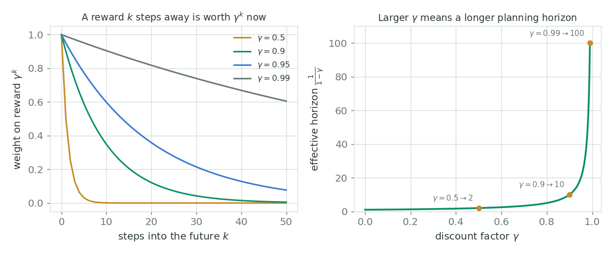
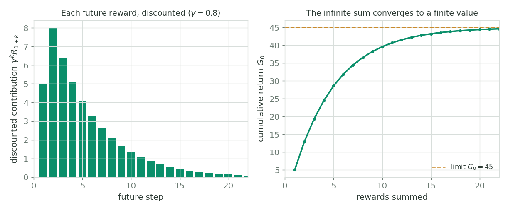

Markov Decision Processes & the Return
Different situations call for different actions
The k-armed bandit does not account for the fact that different situations call for different actions. A bandit is only concerned with immediate rewards: it sits in a single state and gets to choose from the same set of actions every step. But a better decision can often be made by considering the long-term impact of that decision.
The agent-environment interface
Reinforcement learning is framed as an agent interacting with an environment at discrete time steps. At each step $t$ the agent receives a state $S_t$ from the environment, drawn from the set of possible states $\mathcal{S}$ (script S). Based on that state it selects an action $A_t$ from $\mathcal{A}(S_t)$, the set of all valid actions in state $S_t$. One step later the agent finds itself in a new state $S_{t+1}$, and the environment also hands back a scalar reward $R_{t+1}$ drawn from the set of possible rewards $\mathcal{R}$.
The dynamics of an MDP
What makes this a Markov Decision Process is that the environment's response is captured by a single probability distribution, the dynamics function $p$. It gives the joint probability of landing in next state $s'$ with reward $r$, given the current state $s$ and action $a$:
As a function it has the signature $p : \mathcal{S} \times \mathcal{R} \times \mathcal{S} \times \mathcal{A} \to [0, 1]$. Because $p$ is a proper probability distribution over every possible next-state-and-reward pair, it has to sum to one for each state-action the agent might be in:
The Markov property
The dynamics function depends only on $s$ and $a$, not on the entire history of states and actions that came before. That is the Markov property: the future state $s'$ and reward $r$ depend only on the current state and action.
Example: the recycling robot
The course's running example is a soda-can-collecting robot with two battery levels, $\texttt{high}$ and $\texttt{low}$. In each state it can search for cans, wait for someone to bring one, or (when low) recharge. Searching earns the most reward but drains the battery; from low, a search might succeed (probability $\beta$, reward $+10$) or deplete the battery and force a rescue back to high (probability $1 - \beta$, reward $-20$). Waiting is safe but earns less. The whole behaviour is just a table of $p(s', r \mid s, a)$ entries, one MDP.
The MDP formalism is deliberately abstract and flexible:
- States can be low-level sensory readings (pixel values in a video frame) or high-level descriptions (object identities, a battery being
highorlow). - Actions can be low-level (a motor's wheel speed) or high-level (go to the charging station).
- Time steps can be very small or very large; they need not be fixed clock ticks.
The same five symbols, $\mathcal{S}$, $\mathcal{A}$, $\mathcal{R}$, $p$, and the discount we are about to meet, describe a chess engine, a thermostat, and a warehouse robot alike.
The goal of RL: the return
So what is the agent actually trying to maximise? Not the next reward, but the return: the sum of rewards obtained after time step $t$. In the simplest case,
Each $R$ here is a random variable, because the dynamics of the MDP are stochastic, so $G_t$ is random too. For $G_t$ to be well defined this sum must be finite. In an episodic task there is a special final time step $T$ at which the agent-environment interaction ends in a terminal state. The interaction breaks naturally into chunks called episodes; each episode begins independently of how the previous one ended, and at termination the agent is reset to a start state. Chess is an episodic task: each game is one episode that ends in a terminal (win / lose / draw) state.
Continuing tasks and the infinite-sum problem
Not every task ends. In a continuing task the interaction goes on forever and there is no terminal state. A smart thermostat regulating a building's temperature never stops interacting: its state might be the current temperature, the number of people, and the time of day; its actions are turning heating on or off; a reward of $-1$ might fire whenever someone has to adjust the temperature manually.
How do we formulate the return for a continuing task? If we naively sum all future rewards as we did for the episodic case, we are summing an infinite sequence:
Discounting
The fix is to discount rewards that arrive further in the future by a factor $\gamma$, the discount rate, with $0 \le \gamma < 1$. A reward that lands $k$ steps from now is multiplied by $\gamma^{k}$, so the discounted return is
This sum is now guaranteed finite (as long as the reward is bounded). Let $R_{\max}$ be the largest reward the agent can ever receive. Then we can bound the return above by pulling the constant out and summing a geometric series:
Since $\tfrac{1}{1-\gamma}$ is finite for $\gamma < 1$, the return is upper-bounded by a finite quantity, hence $G_t$ itself is finite. That same $\tfrac{1}{1-\gamma}$ doubles as a rough effective horizon: it is how many steps into the future the agent meaningfully cares about.

figures/gen_mdp.py.The two extremes are instructive:
- $\gamma = 0$: the agent only cares about the immediate reward, $G_t = R_{t+1}$. A myopic agent, exactly the bandit view.
- $\gamma \to 1$: the agent weights future rewards almost as strongly as immediate ones. A far-sighted agent.
The recursive form of the return
One last manipulation unlocks nearly every algorithm to come. Factor a single $\gamma$ out of the discounted return:
The return at this step is just the next reward plus the discounted return from the next step. This self-referential shape is the seed of the Bellman equations and of every value-based method later in the course.
A worked example
From my notes: suppose the agent receives a reward of $+5$ at the first step, followed by an infinite tail of $+10$ rewards forever, with $\gamma = 0.8$. Using the recursive form $G_0 = R_1 + \gamma G_1$:
Here $G_1$ is the value of the constant $+10$ stream (a geometric series with $R_{\max} = 10$), and $G_0$ folds in the one-off $+5$ at the front. The infinite sum is perfectly finite.

figures/gen_mdp.py.Next up in the course: now that we can measure how good an outcome is with the return, we attach a number to every state and action through policies and value functions, and the recursive return $G_t = R_{t+1} + \gamma G_{t+1}$ becomes the Bellman equations.